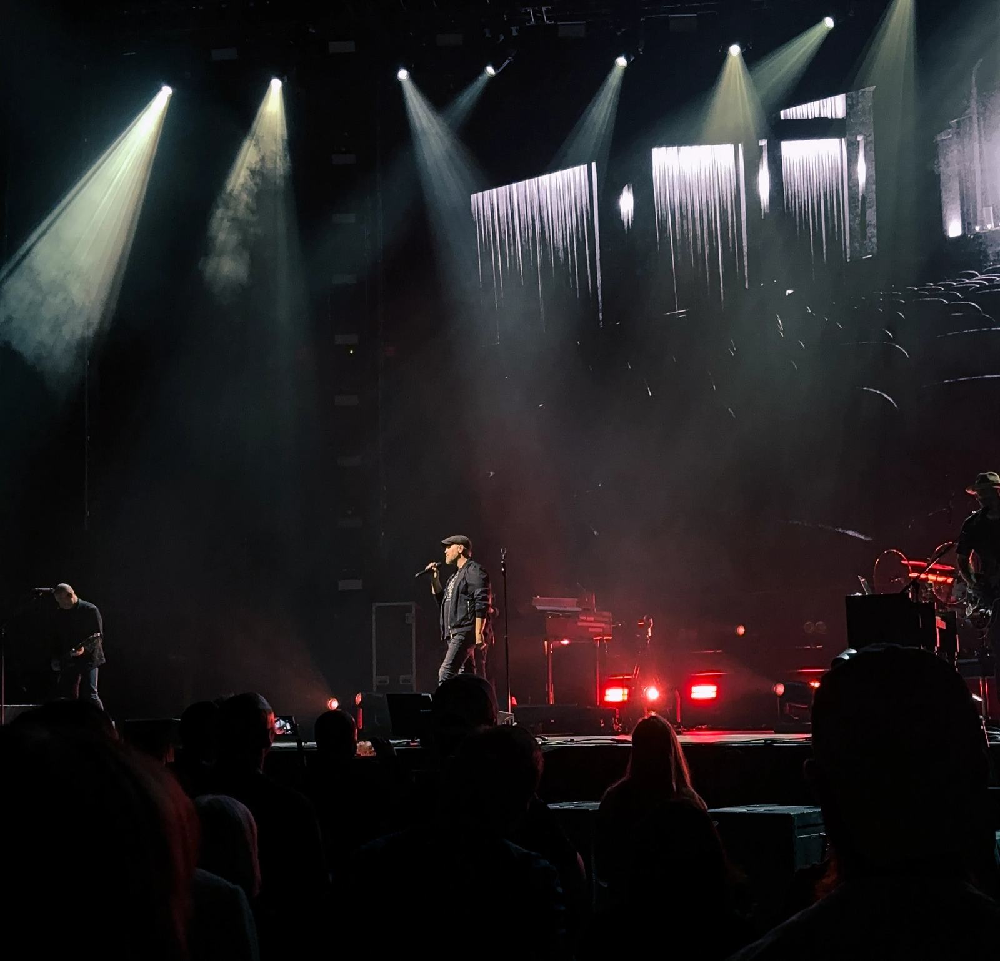
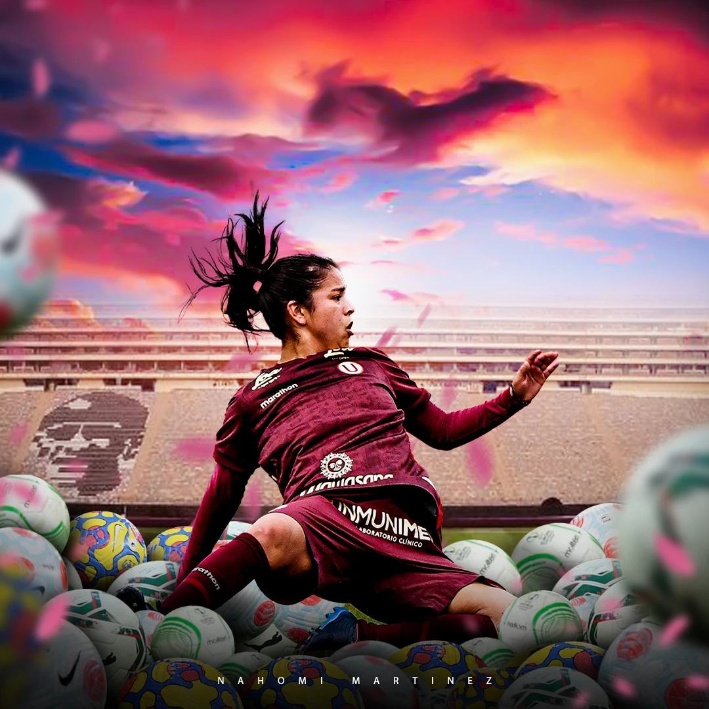

Design · Video · Live photography
1.3M+ campaign views
EstebanGuillen
Graphic designer and video editor based in Miami. I edit and shoot video for political campaigns at Harris Media Group, photograph concerts and design sports and brand content. My videos have passed 1.3 million views.
Move the cursor: it's the light
Approach
I work where things move fast. A campaign that goes out tomorrow, a concert in the dark, a match that kicks off at three, a brand that posts every day. My job is to be ready, and to make the image tell the story without explanation.
Setlist · Selected work
See all 12 projectsSix disciplines
Video, photo, sports,
brand, web and gaming.
 MercyMe · Live photography
MercyMe · Live photography Bobby Charles · Political video
Bobby Charles · Political video Nahomi Martínez · Sports design
Nahomi Martínez · Sports design Crowder · Live photography
Crowder · Live photography Qatar 2022 · Branding and social
Qatar 2022 · Branding and social Sam Gallucci · Political video
Sam Gallucci · Political video Luis Benites · Sports design
Luis Benites · Sports design Physo · Branding and social
Physo · Branding and social for KING & COUNTRY · Live photography
for KING & COUNTRY · Live photography
Matchday's · Sports design Zena Coffee · Web and UI
Zena Coffee · Web and UI Valorant · Gaming
Valorant · GamingSam Gallucci & NH Senate
Bobby Charles for Maine
photographs
posters
Campaign video
Editing, motion and social cut-downs.

Experience · since 2018
View full résumé- 2025 — PresentVideo Editor & VideographerHarris Media Group
- 2025 — PresentConcert PhotographerFreelance
- 2022 — 2024Freelance Graphic DesignerClubs, players and brands
- Feb 2022 — Jul 2022Graphic DesignerDigitalia TEC
- Jan 2020 — Jul 2022Graphic DesignerArturo's Burger
- Mar 2018 — Jul 2022Graphic DesignerSoporte Total GUIMI S.A.
What I do
- 01
Campaign video
Editing, motion and social cut-downs for candidates and causes.
- 02
Live photography
Concerts and events: full coverage, edited and delivered.
- 03
Sports design
Matchday posters, fixtures, signing announcements and player graphics.
- 04
Branding and social
Visual systems for brands and monthly content.
- 05
Web and UI
Landing pages and online stores designed in Figma.